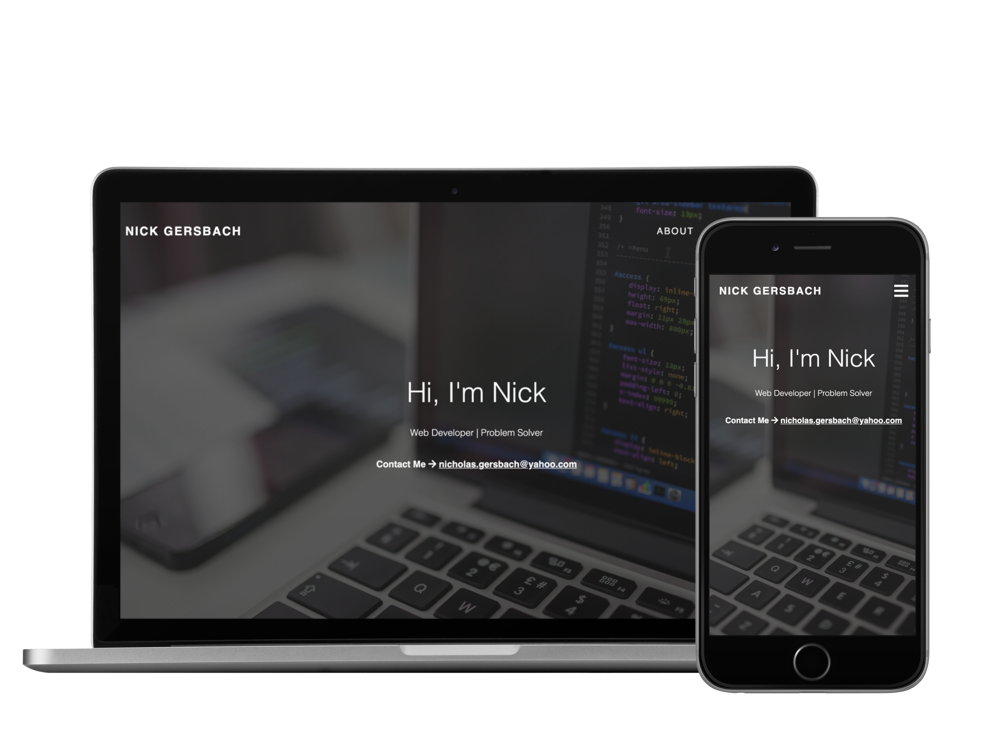
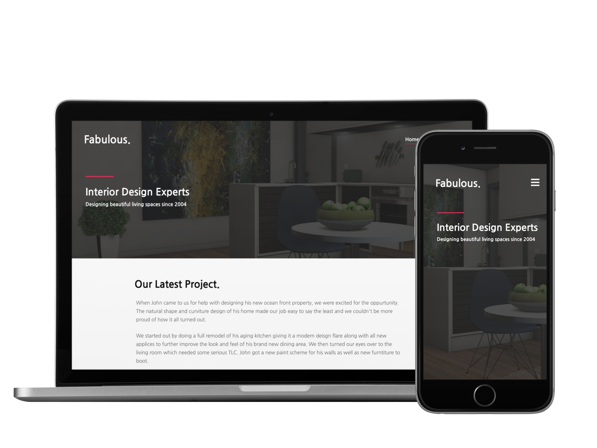
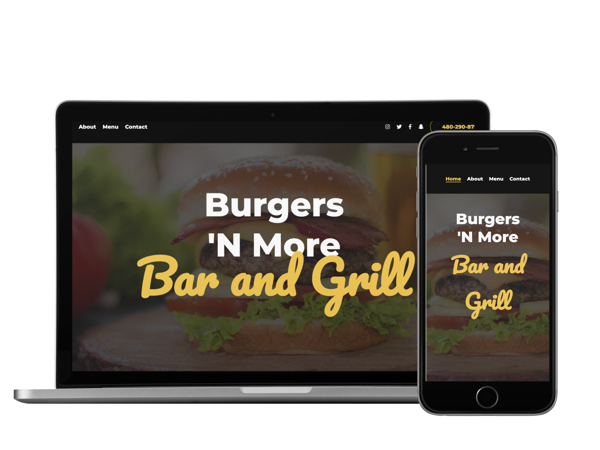
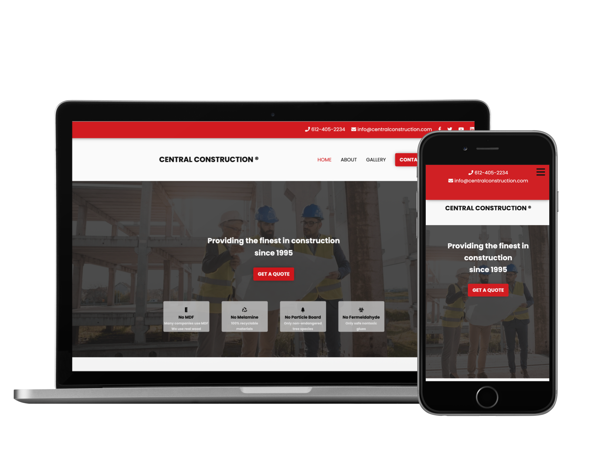
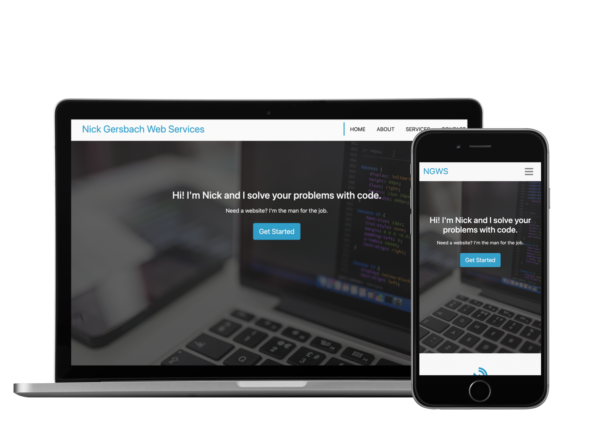
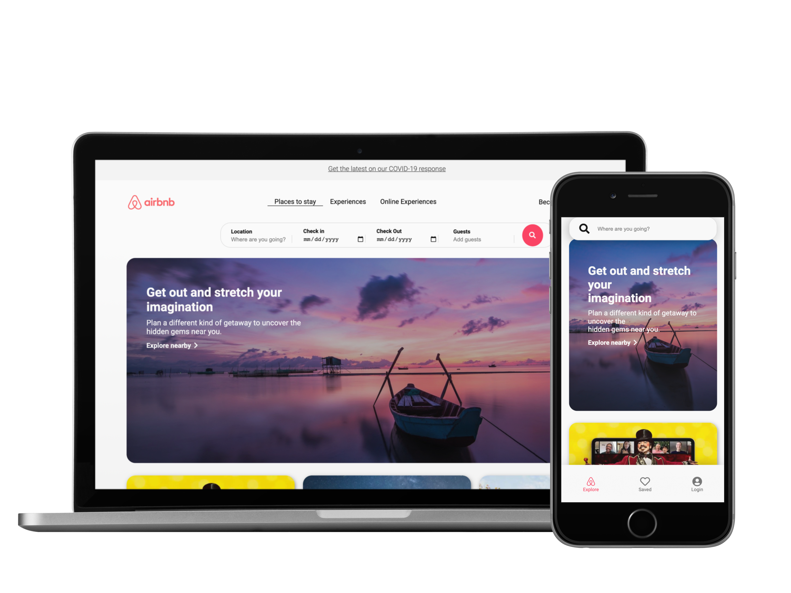
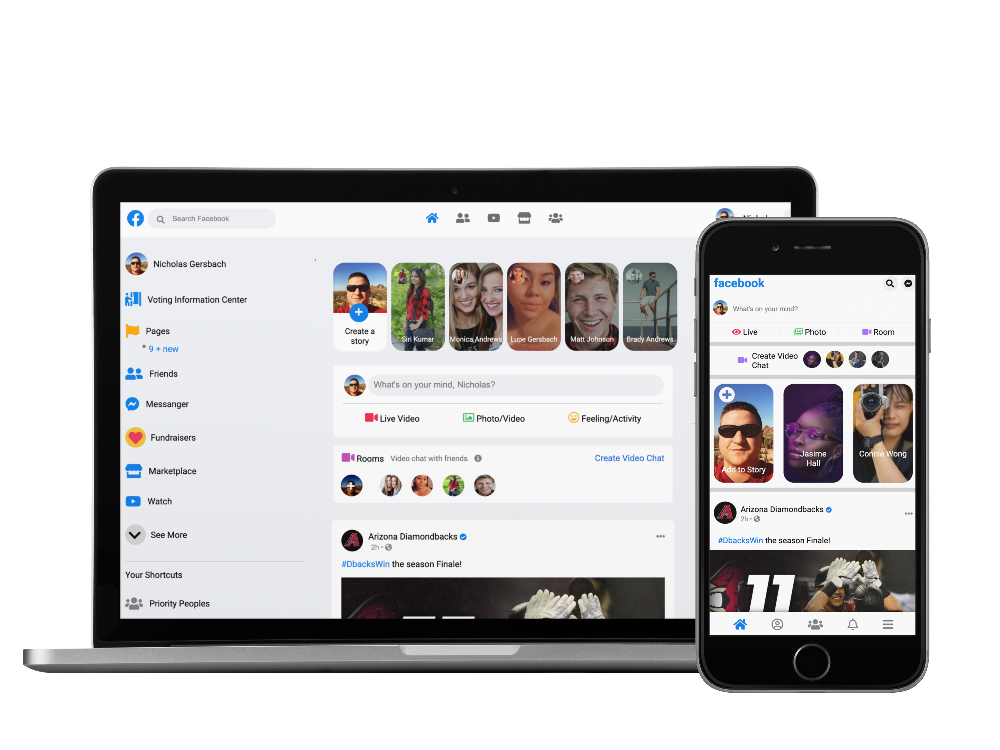
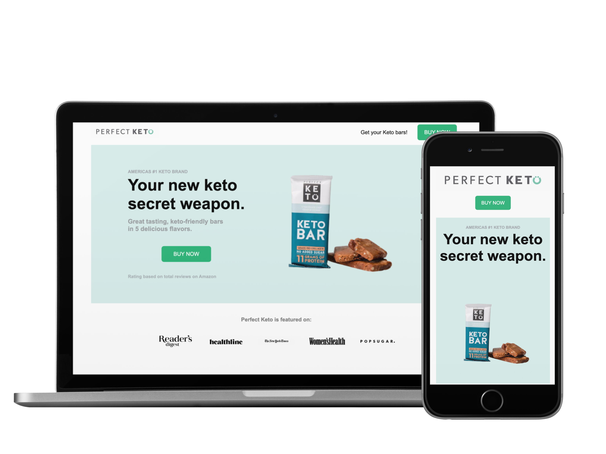
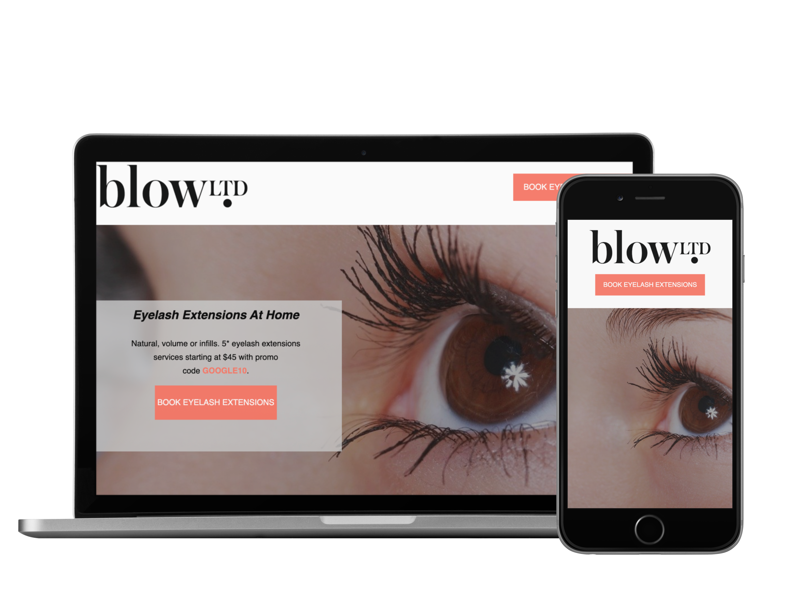

My Work
Web Dev Portfolio
Tech: HTML, CSS, Javascript, Jquery
I made this responsive portfolio from scratch. The first two versions this site were much larger and animation heavy, but I decided to cut most of that out and go with a clean simple design.
Fabulous Interior Design
Tech: HTML, CSS, Javascript
This is a website for an interior design company. It has multiple pages and has an image slider and image lightbox effects (desktop only) which were built with vanilla JavaScript.
Burgers N More
Tech: HTML, CSS
This is a restaurant theme that I created which can be used for any type of restraunt. Building this project showed me how typography can have a powerful visial effect on design. In my opinion this is the best looking site that I've ever created. I always crave a burger when I look at it!
Central Construction
Tech: HTML, CSS, JavaScript
I ceated this site to use as a theme for local construction businesses. Completing this project further improved my skills with CSS positioning as well as mobile design. I had to tweak quite a few things when it came to making a mobile friendly version of this site.
Agency Bootstrap Theme
Tech: HTML, CSS, Bootstrap 4, JavaScript, Jquery
Building this agency theme taught me the fundamentals of Bootstrap and how to use the technology effectivley. Although I typically write my own CSS with my own mini framework, learning bootstrap has helped me understand other people's code better since so many site are used with the framework.
Airbnb Home Page Clone
Tech: HTML, CSS
Building this clone of the airbnb homepage taught me a lot about css positioning and how to use CSS grid and flexbox together. This was my first big project that I made all by myself. Once I got close to finishing it a light bulb suddenly went off. I finally understood css positioning and mobile design after months of struggling. Completing this project was a huge milestone for me that changed everything.
Facebook Homepage Clone
Tech: HTML, CSS, SASS
I cloned the facebook homepage to further hone my CSS and mobile design skills while also learning SASS. This was also my first attempt to build a site that used a mult-column layout, something I had never done before. I'm very proud of how it came out.
Perfect Keto Landing Page
Tech: HTML, CSS
I cloned this landing page for Perfect Keto to get some experience with building a basic landing page. This project taught me how to optimize images and use programs to take away their background.
Western Rise Landing Page
Tech: HTML, CSS
This landing page for Western Rise jeans was my first attempt at making a landing page. This project tested my CSS flexbox skills as well as image optimization and typography.

Blow Lashes Landing Page
Tech: HTML, CSS
This is a landing page for Blow Lashes LTD. This project taught me how to clone a basic landing page and make it responsive.
